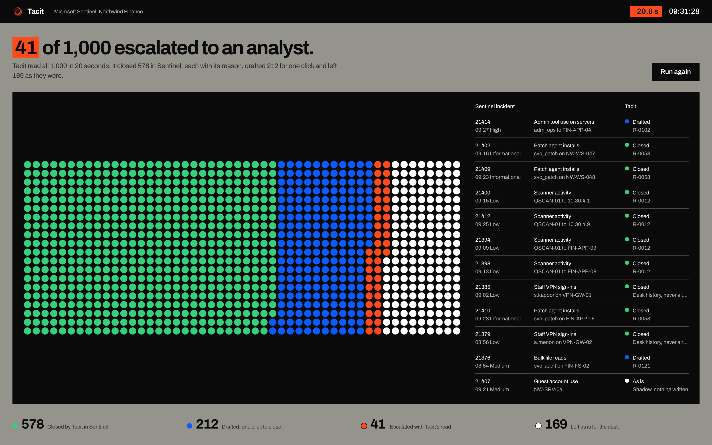
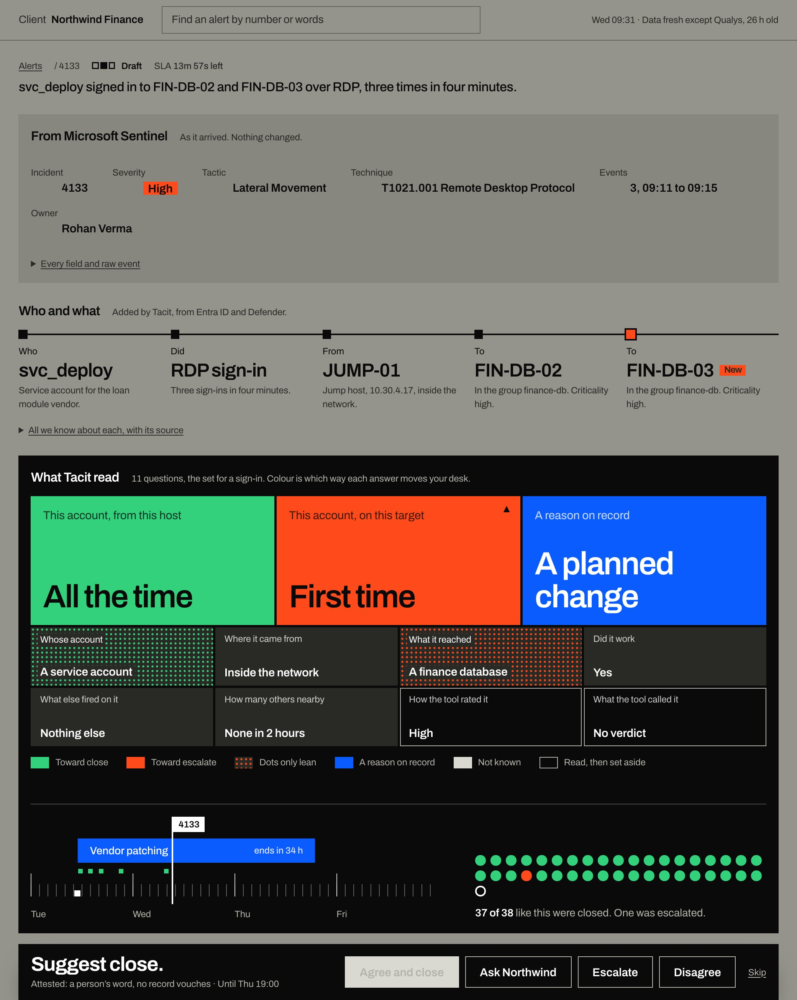

The reason was never written down.
svc_deploy is ours, till Thursday R-0031 · on the IT head’s word · lapses Thu 19:00
Close to half the alerts a SOC analyst opens turn out to be work the client had already approved, and your analyst closes them because she knows the client. Tacit captures that reasoning of your analysts, builds a judgement layer that starts closing them for her, and puts the reason on the record.
of one SOC’s alerts over four years were real detections of work that was expected there.
Yang et al., USENIX Security 2024.
Clients who trust us
Clients of Birchlogic, the founders’ security practice.
Your SIEM was right, the client was right, but you still lose hours every day.
The name for this is a benign positive, which is a real detection of work that was expected. It is not a false alarm, so no amount of rule tuning removes it, and in the public data it is the largest single thing in the queue. Your SIEM cannot close it either, because what closes it is something your client said, and that never reached the SIEM.
of the incidents in Microsoft’s public GUIDE dataset were graded benign positive by the customers themselves.
Microsoft GUIDE dataset
of rule exclusions were still in force three years after someone added them.
The Exclusion Ratchet, 2026
close it again tomorrow
Four to ten minutes every time, four analysts deciding it four ways, and nothing kept for the next shift or the next hire.
or narrow the rule, for good
The exclusion outlives the reason for it, and three years on nobody remembers what it is hiding.
It sits between your SIEM and your analysts.
Every alert passes Tacit on its way to your desk. What a reason covers is closed in your SIEM with the reason attached, what needs a person is escalated with everything Tacit read, and the rest is left exactly as it was.

A thousand alerts from one night at a made-up client, as the product’s run screen leaves them.
A trade is learned at the bench.
- What makes your best analyst good is that she knows the client.
- She learned it the way a shipwright does, standing beside someone who already knew.
- None of it was written down, so when she moves on, or the provider changes, the desk starts again.
- A model cannot guess it either, because the answer was never in the alert.
- So it has to be kept: what was said, by whom, for what, until when.
- Tacit is the desk’s ledger and the clerk who keeps it.
214 reasons. 56 hold today.
A reason is something a client told your desk to expect: the scanner that runs on Wednesdays, the vendor who is in until Thursday, a change window on one server. This is one client’s register, and nobody keeps 214 of these in their head, so today they live in chat threads and in whoever happens to be on shift.
Tacit files a card for each one, and it closes an alert only while the card still holds.
Tap a card behind to pull it forward. The register is made up for illustration.
No entry, no close.
When nothing on the register explains an alert, Tacit says so and hands it to a person with the case put together. Every alert of one kind is asked the same questions, ten to fourteen of them, and you see each answer as it is, with nothing rolled up into a score.
RDP from a new workstation
Alert 4157 · nothing on the register covers it · yours

An alert a reason does cover, as the analyst sees it. One answer is orange: svc_deploy has never been on FIN-DB-03 before.
The desk’s judgement, and one analyst’s habit.
Your SIEM models the alert, and Tacit models the people who decide on it. It reads the decisions your desk has already made, works out what moves the desk as a whole, and shows you where one analyst’s habit departs from it, like escalating everything that arrives over the VPN. You see which is which before any of it is put to work, and nobody is shown by name.
the desk, as one
one analyst, by habit
It watches first, then drafts, and goes live only where you say.
It starts with a two-week review of the decisions your desk has already made: which calls were sound, which alerts were escalated for no reason, and how many nobody needed to open at all. Nothing changes on your desk until you have seen it.
- firstConnect, read-only.Tacit reads your SIEM, your tickets and whatever else you choose to show it. It cannot change an alert or a rule.
- thenReview the history.It reads ninety days of your desk’s own decisions, so it knows how this desk decides for this client, and hands you the review.
- beside youShadow.Tacit makes its call next to your analysts and writes nothing to your tools, so you can compare the two.
- when you sayDrafts, then live.One kind of alert at a time, and only with your client’s approval. Any one of seven conditions sends it back to shadow.
What Tacit is not.
- A detector
Your SIEM does the detecting.Tacit reads what your rules raise and never writes or narrows one.
- An AI analyst
Nothing is guessed.A small language model, running inside your boundary, reads the client’s message and copies their words onto the card. It never decides a close. That is done by a model you can read one answer at a time.
- A score out of 100
Every answer, shown as it is.Nothing is blended into one number.
- An analyst scorecard
Results are for the desk and for teams.No number is ever shown against a person’s name.
- A permanent exclusion
Every reason carries the day it lapses.After that day the alert goes back to a person.
- A cheaper SIEM bill
It takes alerts off your analysts.It does not cut what you ingest, and no raw logs leave your boundary.
What a design partner gets back.
A design partner runs Tacit in shadow on one client’s alerts, inside their own boundary. It is a second pair of eyes on every call the desk makes, and this is what comes back to them.
- Fewer alerts on the desk.What a client has already explained is closed before an analyst opens it.
- A reason behind every close.What it covers, who vouched for it and the day it lapses, all on the record.
- Rules left whole.A reason lapses on its date, so nobody has to narrow a detection for good.
- What the desk knows, kept.When an analyst moves on or a provider changes, what they knew about each client stays on the register, and a new analyst starts from it.
of the benign positives in Microsoft’s public GUIDE data were closed, across 303,220 incidents graded by the customers themselves. At that setting, 1 in 100 true positives was closed as well.
Tacit research, 6 Nov 2026. Public data, measured against each customer’s own grade. This is not a design partner’s result.
Our design partners’ own figures go here as they are measured. None is published yet.
Your client never has to take our word for it.
Every close is an entry in a ledger, each one sealed to the one before. Anyone you hand a record to can check it is whole, without signing in and without trusting us.
- record
- r-4133 · Northwind Finance · rdp-multi|svc-accounts
- claim
- Suggest close. Rests on the client’s word, R-0031 v.2.
- agreed
- L1, day desk, Wed 9 Dec 09:31, four checks ticked.
- seal
- not yet checked
Write it down before it walks out of the door.
Bring your SIEM, and tell us who runs your desk, to a thirty-minute call. We will tell you what Tacit would read first and what a two-week review of your desk’s decisions would show, or tell you it is not a fit and wish you well.
or write to hi@tacitlabs.ai